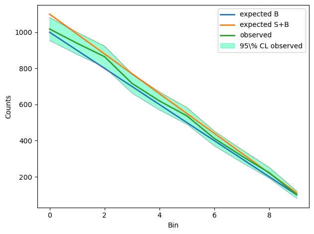
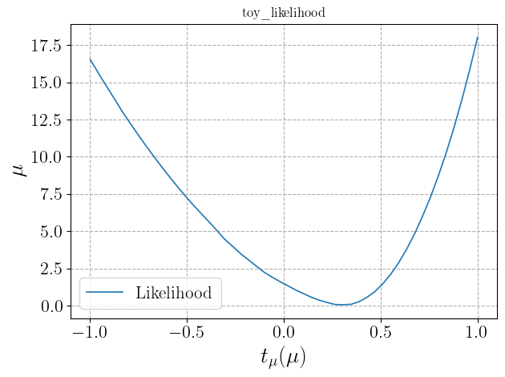

Usage¶
We give here a brief introduction to the use of the Lik class. Refer to the
full class documentation for more details.
The Lik object can be created both by directly inputing the relevant
arguments or automatically, in case the likelihood function comes from an ATLAS histfactory workspace,
by the Histfactory object through the
Histfactory.get_likelihood_object
method. In the the Histfactory object Usage section of the documentation
we already gave an example of the latter method. We give here a very simple (toy) example of creation
of the object from input arguments.
The first time a Lik object is created, the following arguments need to
be specified:
logpdf_args(optional, if required bylogpdf)
logpdf_kwargs(optional, if required bylogpdf)
If only one among the last two is specified, the other is determined from it by using the number of
dimensions determined from the logpdf argument. Optionally, also the arguments
can be specified. The first two correspond to Likelihood properties, the third contains the path (either relative relative to the code execution folder or absolute) to a folder where output files will be saved and the last is the name of the object (which is otherwise automatically generated).
To give a simple example, let us start by creating a very simple toy experiment with 10 bins,
one nuisance parameter per bin and one signal strength parameter:
import numpy as np
from matplotlib import pyplot as plt
np.random.seed(1234)
nbI_nominal = np.array(list(reversed([i for i in range(100,1100,100)])))
nsI_reference = np.array(list(reversed([i for i in range(10,110,10)])))
nbI_obs = np.random.poisson(nbI_nominal+1/2*nsI_reference)
nbI_obs_up_2sigma = nbI_obs+2*np.sqrt(nbI_obs)
nbI_obs_down_2sigma = nbI_obs-2*np.sqrt(nbI_obs)
A graphical representation of this toy experiment can be obtained through:
x=range(10)
plt.plot(x,nbI_nominal,label="expected B",linewidth=2)
plt.plot(x,nbI_nominal+nsI_reference,label="expected S+B",linewidth=2)
plt.plot(x,nbI_obs,label="observed",linewidth=2)
plt.plot(x,nbI_obs_up_2sigma,"--",linewidth=0.5,label=None)
plt.plot(x,nbI_obs_down_2sigma,"--",linewidth=0.5,label=None)
plt.fill_between(x,
nbI_obs_up_2sigma,
nbI_obs_down_2sigma,
color="mediumspringgreen",
label=r"95\% CL observed",
alpha=0.4)
plt.legend()
plt.xlabel("Bin")
plt.ylabel("Counts")
plt.tight_layout()
plt.show()
plt.close()
This prints the following plots in the active console
{kind=link}
The logpdf function can be defined as:
def nbI(delta):
# Background in each bin as function of the 10 nuisance parameters delta
delta = np.array(delta)
return np.array([nbI_nominal[i]*(1+0.1)**delta[i] for i in range(len(delta))])
def nsI(mu):
# Signal in each bin as function of the signal strength parameter mu
return mu*nsI_reference
def nI(pars):
# Expected counts in each bin
mu = pars[0]
delta = pars[1:]
return np.array(nsI(mu)+nbI(delta))
def loglik(pars, obs):
# Log of Poisson likelihood
exp = nI(pars)
logfact = np.array(list(map(lambda x: np.math.lgamma(x+1), obs)))
return np.sum(-1*logfact+obs*np.log(exp)-exp)
def logprior(pars):
# Log of prior: normal distribution for deltas and uniform [-5,5] distribution for mu
mu = pars[0]
delta = pars[1:]
delta_prior = -1/2*np.sum(delta**2+np.full(len(delta),np.log(2*np.pi)))
return delta_prior-np.log(1/(10))
def logpdf(pars, obs):
# Logpdf given by the sum of log-likelihood and log-prior
return loglik(pars, obs)+logprior(pars)
This function takes as arguments the parameters (mu, delta) and the observed counts.
In this example we will define the Likelihood object from the log-pdf and not from the log-Likelihood
itself. The difference is only given by the log-prior, which can be added and subtracted at any time.
We can now define arguments related to parameters (if labels are not defined, then they will be
automatically generated) and initialize the Lik with a few lines of code:
import DNNLikelihood
pars_pos_poi = [0]
pars_pos_nuis = range(1,11)
pars_central= np.insert(np.full(len(pars_pos_nuis),0),pars_pos_poi,0)
pars_bounds = np.concatenate((np.array([[-5,5]]),
np.vstack([np.full(10,-np.inf),
np.full(10,np.inf)]).T))
pars_labels = [r"$\mu$"]
for i in range(len(pars_pos_nuis)):
pars_labels.append(r"$\nu_{%d}$" % i)
likelihood = DNNLikelihood.Lik(name = 'toy',
logpdf = logpdf,
logpdf_args = [nbI_obs],
pars_central = pars_central,
pars_pos_poi = pars_pos_poi,
pars_pos_nuis = pars_pos_nuis,
pars_labels = pars_labels,
pars_bounds = pars_bounds,
output_folder = "<path_to_output_folder>")
>>> ==============================
Initialize Likelihood object.
==============================
Lik output folder set to
<abs_path_to_output_folder> .
==============================
Likelihood json file
<abs_path_to_output_folder>\toy_likelihood.json
saved in 0.0018376000000017711 s.
==============================
Likelihood h5 file
<abs_path_to_output_folder>\toy_likelihood.h5
saved in 0.015376500000002125 s.
==============================
Predictions json file
<abs_path_to_output_folder>\toy_likelihood_predictions.json
saved in 0.0016533000000009679 s.
==============================
Likelihood log file
<abs_path_to_output_folder>\toy_likelihood.log
saved in 0.0009189000000020542 s.
where we used the placeholders <path_to_output_folder>, and <abs_path_to_output_folder> to indicate the corresponding paths (relative paths can be given as input and are automatically converted into absolute paths).
When the object is created, it is automatically saved and four files are created:
<abs_path_to_output_folder>/toy_likelihood.h5
<abs_path_to_output_folder>/toy_likelihood.json
<abs_path_to_output_folder>/toy_likelihood.log
<abs_path_to_output_folder>/toy_likelihood_predictions.json
See the documentation of the
methods for more details.
The object can also be initialized importing it from saved files. In this case only the
input_file argument needs to be specified (with path relative
to the code execution folder or absolute and with or without extension), while all other arguments
are ignored. One could also optionally specify a new output_folder.
In case this is not specified, the Lik.output_folder
attribute is set equal to the Lik.input_folder one, so that the
object continues to be saved in the same path from which it has been imported.
For instance we could import the object created above with
import DNNLikelihood
likelihood_loaded = DNNLikelihood.Lik(input_file="<path_to_output_folder>/toy_likelihood")
>>> ==============================
Initialize Likelihood object.
==============================
Likelihood object loaded in 0.010173800000018218 .
==============================
Lik output folder set to
<abs_path_to_output_folder> .
==============================
Predictions json file
<abs_path_to_output_folder>\toy_likelihood_predictions.json
updated (or saved if it did not exist) in 0.0010424000000028855 s.
==============================
Likelihood log file
<abs_path_to_output_folder>\toy_likelihood.log
updated (or saved if it did not exist) in 0.0011185999999838714 s.
When the Lik object is created, the logpdf
input argument is saved in a FunctionWrapper together with the optional
logpdf_args and logpdf_kwargs
arguments. The numerical value of the lofpdf for a given value of the parameters (for instance the
Lik.pars_central) can be obtained through
likelihood.logpdf(likelihood.pars_central)
>>> -54.736235046924904
The value of the optional logpdf_args and
logpdf_kwargs arguemnts, together with the function provided by the
logpdf argument, can be extracted from the FunctionWrapper as follows:
print(likelihood.logpdf.f)
print(likelihood.logpdf.args)
print(likelihood.logpdf.kwargs)
>>> <function logpdf at 0x7fc0a7a54550>
[array([1018, 939, 865, 717, 620, 537, 412, 315, 222, 101])]
{}
A general logpdf function is given by the Lik.logpdf_fn method,
which takes both the function and the optional arguments as inputs. For instance, one could use it to
calclulate the logpdf for different values of args (in this case a list containing an array with
the observed counts) and kwargs (in this case an empty dictionary) through
likelihood.logpdf_fn(likelihood.pars_central,*[np.array([1031, 903, 810, 720, 597, 477, 421, 304, 211, 104])],**{})
>>> -49.754671664827484
where we explicitly added an empty optional kwargs for illustration purposes.
In particular, notice the equivalence of the two members in the following code:
likelihood.logpdf(likelihood.pars_central)==likelihood.logpdf_fn(likelihood.pars_central,*likelihood.logpdf.args,**likelihood.logpdf.kwargs)
>>> True
Results computed with the various methods of the object are saved in the
Lik.predictions dictionary attribute, which is saved into the
output json file corresponding to the
Lik.output_predictions_json_file attribute
through the Lik.save_predictions_json method.
The Lik.predictions dictionary also stores,
under the item corresponding to the key "Figures", information on the
generated figures. The Lik.predictions dictionary
can be reset at any time as follows:
likelihood.reset_predictions(delete_figures=True,save=True,verbose=2)
>>> ==============================
Resetting predictions.
==============================
All predictions and figures have been deleted and the 'predictions' attribute has been initialized.
==============================
Predictions json file
<abs_path_to_output_folder>\toy_likelihood_predictions.json
updated (or saved if it did not exist) in 0.000885500000002537 s.
==============================
Likelihood log file
<abs_path_to_output_folder>\toy_likelihood.log
updated (or saved if it did not exist) in 0.001010800000003087 s.
==============================
Predictions reset in 0.0007486999999954946 s.
One can check the logpdf dependence on the input parameters by plotting it with the
Lik.plot_logpdf_par method. For instance, one can get
the plot for the parameters 0 (signal strength) and 5 (nuisance parameter) in the range
(-1,1) with all other parameters set to their central values (i.e. their values defined in the
Lik.pars_central attribute), through
likelihood.plot_logpdf_par([[0,-1,1],[5,-1,1]],show_plot=True,overwrite=True,verbose=2)
>>> ==============================
Making plot of logpdf as function of paramerers.
==============================
Checking and updating figures dictionary
<plot1>
==============================
Figure file
<abs_path_to_output_folder>/figures/toy_likelihood_figure_par_0.pdf
created and saved in 8.517387338011758 s.
==============================
Checking and updating figures dictionary
<plot2>
==============================
Figure file
<abs_path_to_output_folder>/figures/toy_likelihood_figure_par_5.pdf
created and saved in 3.949587409006199 s.
==============================
Predictions json file
<abs_path_to_output_folder>\toy_likelihood_predictions.json
updated (or saved if it did not exist) in 0.0014017000000023927 s.
==============================
Likelihood log file
<abs_path_to_output_folder>/toy_likelihood.log
updated (or saved if it did not exist) in 0.0035943260008934885 s.
The plots <plot1> and <plot2> printed on the active console are


and are saved to two files, whose names are stored in the "Figures" item of the
Lik.predictions dictionary attribute (under a corresponding
timestamp item):
likelihood.predictions["Figures"]
>>> {<timestamp>: ['toy_likelihood_figure_par_0.pdf',
'toy_likelihood_figure_par_5.pdf']}
where <timestamp> is a string of the form “datetime_aaaa_mm_dd_hh_mm_ss_xxxx” containing the
corresponding timestamp.
Figures are saved in the folder given by the
Lik.output_figures_folder attribute.
One could also optionally choose a different central value for the parameters that are kept fixed
by passing an argument pars_init to the
Lik.plot_logpdf_par method.
The maximum of the logpdf, and the corresponding parameters values can be obtained with the
Lik.compute_maximum_logpdf method
and are stored in the item corresponding to the "logpdf_max" key of the
Lik.predictions dictionary:
likelihood.compute_maximum_logpdf(pars_init=None,
pars_bounds=None,
optimizer={"name": "scipy",
"args": [],
"kwargs": {"method": "Powell"}},
minimization_options={"maxiter": 100000,
"ftol": 0.000001},
timestamp=None,
save=True,
overwrite=True,
verbose=2)
likelihood.predictions["logpdf_max"]
>>> ==============================
Computing global maximum
Maximum logpdf computed in 0.28266679999978805 s.
==============================
Predictions json file
<abs_path_to_output_folder>\toy_likelihood_predictions.json
updated (or saved if it did not exist) in 0.0014535000009345822 s.
==============================
Likelihood log file
<abs_path_to_output_folder>\toy_likelihood.log
updated (or saved if it did not exist) in 0.0012204000013298355 s.
{<timestamp>: {'x': array([ 0.28835589 , 0. , 0.13434444 , -0.43674865, 0. ,
0.03920713 , -0.35602373, 0.00895953 , 0.16032245 , -0.51686047,
0. ]),
'y': -48.06194074972852,
'pars_init': array([0, 0, 0, 0, 0, 0, 0, 0, 0, 0, 0]),
'pars_bounds': array([[ -5., 5.],
[-inf, inf],
...
[-inf, inf]]),
'optimizer': {'name': 'scipy', 'args': [], 'kwargs': {'method': 'Powell'}},
'minimization_options': {'maxiter': 100000, 'ftol': 1e-06},
'optimization_time': 0.2501852900022641}}
One could also profile the logpdf with respect to some of the parameters and compute local maxima
through the Lik.compute_profiled_maxima_logpdf
method. This is useful both to initialize chains in a MCMC or to perform profiled likelihood inference.
The result is stored in the item corresponding to the “logpdf_profiled_max” key of the
Lik.predictions dictionary.
For instance, profiling with respect to all the nuisance parameters for 10 values of the
signal strength parameter on a grid in the (-1,1) interval, one obtains:
likelihood.compute_profiled_maxima_logpdf(pars=[0],
pars_ranges=[[-1,1,50]],
pars_init=None,
pars_bounds=None,
spacing="grid",
optimizer={"name": "scipy",
"args": [],
"kwargs": {"method": "Powell"}},
minimization_options={"maxiter": 10000,
"ftol": 0.0001},
progressbar=True,
timestamp=None,
save=True,
overwrite=True,
verbose=2)
print(likelihood.predictions["logpdf_max"])
print(likelihood.predictions["logpdf_profiled_max"])
>>> ==============================
Computing profiled maxima
<progress_bar>
The key <timestamp> was not specified and has been set to the default value '{}'.
Total number of points: 50 .
Optimizing for parameters: [0] - values: [-1.0] .
...
Optimizing for parameters: [0] - values: [1.0] .
Computing global maximum to estimate tmu test statistics.
==============================
Predictions json file
<abs_path_to_output_folder>\toy_likelihood_predictions.json
updated (or saved if it did not exist) in 0.005493800001204363 s.
==============================
Likelihood log file
<abs_path_to_output_folder>\toy_likelihood.log
updated (or saved if it did not exist) in 0.001368900000670692 s.
==============================
50 local maxima computed in 5.734996799999863 s.
Log-pdf values lie in the range [ -57.07828497740044 , -48.09221672868154 ].
{<timestamp1>: {'x': array([ 0.28835589, 0. , 0.13434444, -0.43674865, 0. ,
0.03920713, -0.35602373, 0.00895953, 0.16032245, -0.51686047,
0. ]),
'y': -48.06194074972852,
'pars_init': array([0, 0, 0, 0, 0, 0, 0, 0, 0, 0, 0]),
'pars_bounds': array([[ -5., 5.],
[-inf, inf],
...
[-inf, inf]]),
'optimizer': {'name': 'scipy', 'args': [], 'kwargs': {'method': 'Powell'}},
'minimization_options': {'maxiter': 100000, 'ftol': 1e-06},
'optimization_time': 0.2501852900022641},
<timestamp2>: {'x': array([ 0.28903846, 0. , 0.13370308, -0.43622569, 0. ,
0.03690392, -0.35563725, 0.00608195, 0.15979295, -0.51643255,
0. ]),
'y': -48.06198053689947,
'pars_init': array([0, 0, 0, 0, 0, 0, 0, 0, 0, 0, 0]),
'pars_bounds': array([[ -5., 5.],
[-inf, inf],
...
[-inf, inf]]),
'optimizer': {'name': 'scipy', 'args': [], 'kwargs': {'method': 'Powell'}},
'minimization_options': {},
'optimization_time': 0.16715143001056276}}
{<timestamp2>: {'X': array([[-1.00000000e+00, 1.07368376e+00, 1.27984277e+00,
1.57830130e+00, 1.08953930e+00, 1.14335977e+00,
1.43461139e+00, 1.04765467e+00, 1.13227833e+00,
1.40150676e+00, 5.70153228e-01],
...
[ 1.00000000e+00, 0.00000000e+00, 0.00000000e+00,
0.00000000e+00, 0.00000000e+00, 0.00000000e+00,
0.00000000e+00, 0.00000000e+00, 0.00000000e+00,
6.55629299e-02, 0.00000000e+00]]),
'Y': array([-56.336064718100715, -55.893978669360074, -55.4627652463664,
...
-55.98431131656419, -57.07828497740044], dtype=object),
'tmu': array([[-1. , 16.54816836],
...
[ 1. , 18.03260888]]),
'pars': [0],
'pars_ranges': [[-1, 1, 50]],
'pars_init': array([0, 0, 0, 0, 0, 0, 0, 0, 0, 0, 0]),
'pars_bounds': array([[ -5., 5.],
[-inf, inf],
...
[-inf, inf]]),
'optimizer': {'name': 'scipy', 'args': [], 'kwargs': {'method': 'Powell'}},
'minimization_options': {'maxiter': 10000, 'ftol': 0.0001},
'optimization_times': [0.040598378982394934, 0.041676215012557805,
...
0.12507603599806316, 0.060885928018251434],
'total_optimization_time': 3.9257324769569095}}
The progressbar=True argument allows one to print a progress bar to monitor the evolution of the
calculation of the maxima. If one prefers to scan randomly (with a flat distribution) with respect
to using an evenly spaced grid, the argument spacing="random" can be passed.
For additional functionality of the
Lik.compute_profiled_maxima_logpdf method,
such as the choice of the scipy.optimize optimizer, refer to the method documentation.
Finally notice that the
Lik.compute_profiled_maxima_logpdf method
also calls the Lik.compute_maximum_logpdf method
to computes the global maximum with the same optimizer and timestamp (<timestamp2> in the example
above), used to compute a \(t_{\\mu}\) test statistics. As shown in the code above,
the latter is saved in the "tmu" item as a list of pairs with parameters in the first column
and \(t_{\\mu}\) values in the second one.
The computed values of \(t_{\\mu}\) can be plotted with the
Lik.plot_tmu_1d method as follows:
timestamp=list(likelihood.predictions["logpdf_profiled_max"].keys())[-1]
likelihood.plot_tmu_1d(pars_labels="original",
title_fontsize=12,
timestamp=timestamp,
show_plot=True,
overwrite="dump",
verbose=2)
>>> ==============================
Making plot of t_mu test statistics as function of paramerers
==============================
Checking and updating figures dictionary
<plot3>
==============================
Figure file
<abs_path_to_output_folder>/figures/dump_toy_likelihood_figure_tmu_0_datetime_2022_01_24_10_41_08_2717.pdf
created and saved in 3.554831576999277 s.
==============================
Predictions json file
<abs_path_to_output_folder>\toy_likelihood_predictions.json
updated (or saved if it did not exist) in 0.006060300000001462 s.
==============================
Likelihood log file
<abs_path_to_output_folder>\toy_likelihood.log
updated (or saved if it did not exist) in 0.0011037999999530257 s.
where <plot3> is given by
{kind=link}
The figure is also saved in the corresponding file, whose name is addded to the "Figures" item of the
Lik.predictions attribute:
likelihood.predictions["Figures"]
>>> {<timestamp1>: ['toy_likelihood_figure_par_0.pdf',
'toy_likelihood_figure_par_5.pdf'],
<timestamp2>: ['toy_likelihood_figure_tmu_0.pdf']}
Finally, one can save a likelihood script file that can be used to initialize a
Sampler object (see the Sampler object) as
timestamp=list(likelihood.predictions["logpdf_profiled_max"].keys())[-1]
likelihood.save_script(timestamp=timestamp,overwrite=True)
>>> ==============================
Likelihood log file
<abs_path_to_output_folder>\toy_likelihood.log
updated (or saved if it did not exist) in 0.0012540999999828273 s.
==============================
Likelihood script file
<abs_path_to_output_folder>\toy_likelihood_script.py
updated (or saved if it did not exist) in 0.0010519999999587526 s.
which produces the file <abs_path_to_output_folder>/toy_likelihood_script.py. By providing the timestamp
argument, one ensures that the chains in the Sampler are initialized
using the profiled maxima saved in the likelihood.predictions["logpdf_profiled_max"][timestamp]
item.
Each of the above calls to Lik methods updates the
Lik.log attribute and the corresponding
Lik.output_log_file file (that stores a log of the
Lik object). Moreover, any method that modifies the
Lik.predictions attribute, updates by default (through the
default argument save=True and overwrite=True) the
Lik.output_predictions_json_file file.
Even though the files corresponding to the saved object
are usually kept sync with the object state, manual change of some attributes does not update them.
Nevertheless, the full object can be saved at any time through
likelihood.save(overwrite=True)
>>> ==============================
Likelihood json file
<abs_path_to_output_folder>\toy_likelihood.json
updated (or saved if it did not exist) in 0.005770800000050258 s.
==============================
Likelihood h5 file
<abs_path_to_output_folder>\toy_likelihood.h5
updated (or saved if it did not exist) in 0.036816899999962516 s.
==============================
Predictions json file
<abs_path_to_output_folder>\toy_likelihood_predictions.json
updated (or saved if it did not exist) in 0.005177099999968959 s.
==============================
Likelihood log file
<abs_path_to_output_folder>\toy_likelihood.log
updated (or saved if it did not exist) in 0.001476699999898301 s.
The overwrite=True ensure that the output files are updated.
If one aims at saving the object to new files, the overwrite=False argument should be passed.
Finally, one can make a full “dump” of the object, without modifying its current state and output files
with the overwrite="dump" option.